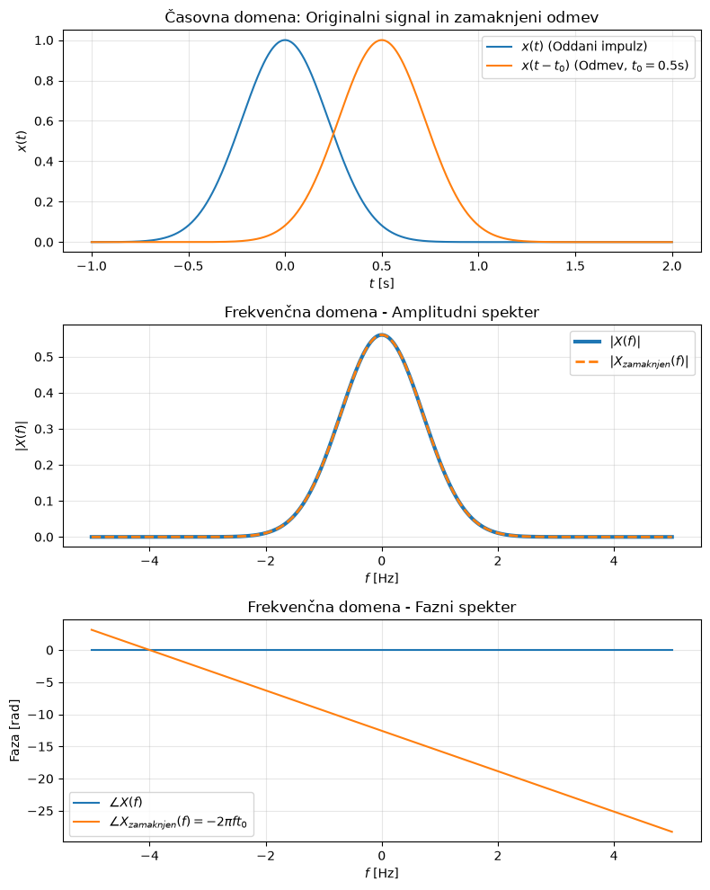

import sympy as sym
t, t_0, f, τ = sym.symbols('t, t_0, f, tau', real=True)
a = sym.symbols('a', real=True, positive=True)
x = sym.Function('x')
i = sym.I
π = sym.pi
X = sym.integrate(x(t-t_0)*sym.exp(-i*2*π*f*t), (t, -sym.oo, +sym.oo))
sym.Eq(X, X.transform(t-t_0, τ))
\[\displaystyle \int\limits_{-\infty}^{\infty} x{\left(t - t_{0} \right)} e^{- 2 i \pi f t}\, dt = \int\limits_{-\infty}^{\infty} x{\left(\tau \right)} e^{- 2 i \pi f \left(t_{0} + \tau\right)}\, d\tau\]
import numpy as np
import matplotlib.pyplot as plt
# 1. Definicija parametrov
a = 10.0 # Parameter širine Gaussovega impulza
t0 = 0.5 # Časovni zamik (čas preleta odmeva)
# Časovni vektor in frekvenčni vektor
t = np.linspace(-1, 2, 1000)
f = np.linspace(-5, 5, 500)
# 2. Definicija signalov v času (Gaussov impulz in odmev)
x_t = np.exp(-a * t**2) # Oddani impulz
x_t_shifted = np.exp(-a * (t - t0)**2) # Prejeti impulz (odmev)
# 3. Analitična Fourierova transformacija v frekvenčni domeni
# F{exp(-a*t^2)} = sqrt(pi/a) * exp(-pi^2 f^2 / a)
X_f = np.sqrt(np.pi/a) * np.exp(-np.pi**2 * f**2 / a)
# Lastnost časovnega premika: X_shifted(f) = X(f) * exp(-i*2*pi*f*t0)
X_f_shifted = X_f * np.exp(-1j * 2 * np.pi * f * t0)
# 4. Priprava grafov
fig, axs = plt.subplots(3, 1, figsize=(8, 10))
# Časovna domena
axs[0].plot(t, x_t, label='$x(t)$ (Oddani impulz)', color='C0')
axs[0].plot(t, x_t_shifted, label=f'$x(t - t_0)$ (Odmev, $t_0={t0}$s)', color='C1')
axs[0].set_title('Časovna domena: Originalni signal in zamaknjeni odmev')
axs[0].set_xlabel('$t$ [s]')
axs[0].set_ylabel('$x(t)$')
axs[0].legend()
axs[0].grid(True, alpha=0.3)
# Frekvenčna domena - Amplituda
axs[1].plot(f, np.abs(X_f), label='$|X(f)|$', color='C0', lw=3)
axs[1].plot(f, np.abs(X_f_shifted), '--', label='$|X_{zamaknjen}(f)|$', color='C1', lw=2)
axs[1].set_title('Frekvenčna domena - Amplitudni spekter')
axs[1].set_xlabel('$f$ [Hz]')
axs[1].set_ylabel('$|X(f)|$')
axs[1].legend()
axs[1].grid(True, alpha=0.3)
# Frekvenčna domena - Faza
# Uporabimo np.unwrap, da faza ne "skala" med -pi in pi (lažje razumevanje za študente)
faza_original = np.unwrap(np.angle(X_f))
faza_zamaknjen = np.unwrap(np.angle(X_f_shifted))
axs[2].plot(f, faza_original, label='$\\angle X(f)$', color='C0')
axs[2].plot(f, faza_zamaknjen, label='$\\angle X_{zamaknjen}(f) = -2\pi f t_0$', color='C1')
axs[2].set_title('Frekvenčna domena - Fazni spekter')
axs[2].set_xlabel('$f$ [Hz]')
axs[2].set_ylabel('Faza [rad]')
axs[2].legend()
axs[2].grid(True, alpha=0.3)
plt.tight_layout()
plt.show()

import sympy as sym
t, t_0, f, τ = sym.symbols('t, t_0, f, tau', real=True)
a = sym.symbols('a', real=True, positive=True)
x = sym.Function('x')
i = sym.I
π = sym.pi
X = sym.integrate(x(t-t_0)*sym.exp(-i*2*π*f*t), (t, -sym.oo, +sym.oo))
sym.Eq(X, X.transform(t-t_0, τ))
\[\displaystyle \int\limits_{-\infty}^{\infty} x{\left(t - t_{0} \right)} e^{- 2 i \pi f t}\, dt = \int\limits_{-\infty}^{\infty} x{\left(\tau \right)} e^{- 2 i \pi f \left(t_{0} + \tau\right)}\, d\tau\]
import sympy as sym
t, t_0, f, a = sym.symbols('t, t_0, f, a', real=True)
i = sym.I
π = sym.pi
x_1 = sym.exp(-t**2)
x_2 = x_1.subs(t, t-t_0)
podatki = {t_0: 1.1}
X_1 = sym.fourier_transform(x_1, t, f)
X_2 = sym.fourier_transform(x_2.subs(podatki), t, f)
X_3 = X_2/sym.exp(-i*2*π*f*t_0)
p1 = sym.plot(x_1.subs(podatki), (t, -2, +2), line_color='C0',
label=f'$t=t$', show=False,
title='Časovna domena', ylabel='$x(t)$', xlabel='$t$')
p2 = sym.plot(x_2.subs(podatki), (t, -2, +2), line_color='C1',
label=f'$t=t-t_0$, $t_0=${t_0.subs(podatki):3.2f}', show=False)
p1.extend(p2)
p1.legend = True
p1.show()
p1 = sym.plot(sym.Abs(X_1).subs(podatki), (f, -2, +2), line_color='C0',
label=f'$t=t$', show=False,
title='Frekvenčna domena $-$ amplituda', ylabel='$|X(f)|$', xlabel='$f$')
p2 = sym.plot(sym.Abs(X_2).subs(podatki), (f, -2, +2), line_color='C1',
label=f'$t=t-t_0$, $t_0=${t_0.subs(podatki):3.2f}', show=False)
p1.extend(p2)
p1.legend = True
p1.show()
p1 = sym.plot(sym.arg(X_1).subs(podatki), (f, -2, +2), line_color='C0',
label=f'$t=t$', show=False,
title='Frekvenčna domena $-$ faza', ylabel='$\\angle X(f)$', xlabel='$f$')
p2 = sym.plot(sym.arg(X_2).subs(podatki), (f, -2, +2), line_color='C1',
label=f'$t=t-t_0$, $t_0=${t_0.subs(podatki):3.2f}', show=False)
p1.extend(p2)
p1.legend = True
p1.show()
p1 = sym.plot(sym.arg(X_3).subs(podatki), (f, -2, +2), line_color='C2',
label=f'$t=t$', show=True, ylim=[-3.2, 3.2],
title='Frekvenčna domena $-$ faza $-$ korekcija: $\\mathcal{F}\\{x(t-t_0)\\} / \\mathrm{e}^{-i\\,2\\pi\\,f\\,t_0}$', ylabel='$\\angle X(f)$', xlabel='$f$')
p1.legend = True